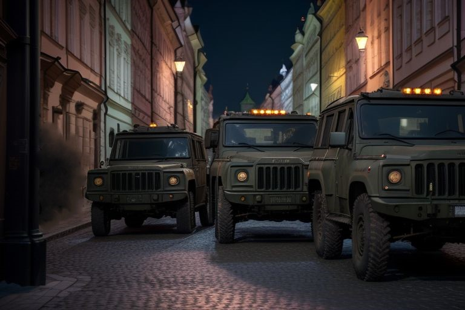

Pražský Hrad
Il via ai lavori di restauro
Una notizia tanto attesa dai praghesi e dagli amanti della storia e della cultura: nella giornata di ieri sono ufficialmente iniziati i lavori di restauro e conservazione presso il maestoso Castello di Praga. Il progetto, lungamente discusso e finalmente approvato dalla municipalità cittadina, mira a riportare all'antico splendore uno dei simboli più iconici della nostra capitale e dell'intera Repubblica Ceca. L'avvio dei lavori è stato accolto con grande entusiasmo dai residenti e dalle istituzioni. "Questo è un giorno importante per Praga," ha dichiarato il portavoce del consiglio comunale durante una breve conferenza stampa tenutasi ieri mattina ai piedi del castello. "Il restauro del Castello è un impegno che abbiamo preso con i cittadini e siamo orgogliosi di poter finalmente dare il via a questo ambizioso progetto." I lavori, che si prevede dureranno diversi mesi, interesseranno diverse aree del complesso, rendendo la struttura inaccessibile al pubblico per la maggior parte del tempo.
Controlli Militari Intensificati in Città: Cresce la Preoccupazione tra i Pragnesi
La presenza militare nelle strade di Praga, già notata nei giorni scorsi, si è fatta ancora più marcata nella giornata di ieri. Pattuglie armate sono visibili in diverse zone della città, con un aumento significativo dei posti di blocco e dei controlli sui documenti dei cittadini. Le autorità competenti, interpellate in merito, hanno ribadito che tali misure sono necessarie per garantire la sicurezza pubblica in un periodo di transizione e di crescente incertezza. Tuttavia, molti praghesi esprimono una crescente preoccupazione per l'intensificarsi di questi controlli, percepiti da alcuni come eccessivi e limitanti la libertà personale.
"Capisco la necessità di sicurezza, ma essere fermati e controllati così frequentemente non è piacevole," ha commentato un residente del centro, che preferisce rimanere anonimo. "Speriamo che questa situazione sia temporanea e che la normalità possa tornare presto nelle nostre strade." Nonostante le rassicurazioni ufficiali, l'aumento della presenza militare continua ad alimentare discussioni e interrogativi tra la popolazione, desiderosa di comprendere appieno le ragioni di questo dispiegamento di forze nella capitale.

Sermone Speciale e Benedizione per la Comunità alla Chiesa del Sacro Cuore di Gesù
La comunità parrocchiale della Chiesa del Sacro Cuore di Gesù, situata nel quartiere di Vinohrady, si stringe attorno al suo amato Padre Jonas in seguito a un deplorevole episodio avvenuto nella notte precedente. Ignoti hanno infatti sottratto la cassetta delle offerte dalla chiesa, un gesto che ha profondamente turbato i fedeli. In segno di solidarietà e per offrire conforto spirituale in questi tempi incerti, Padre Jonas terrà un sermone speciale sul tema del "maligno" che, purtroppo, può insinuarsi anche tra le brave persone della nostra città. La funzione si terrà domenica prossima, 7 gennaio, durante la consueta messa mattutina. In questa occasione, Padre Jonas farà appello al buon cuore dei parrocchiani e di tutti i cittadini praghesi per contribuire a colmare la perdita subita dalla parrocchia.
Allo stesso tempo, offrirà la sua benedizione a tutta la comunità, invocando protezione e speranza per il futuro di Praga. "Siamo addolorati per quanto accaduto, ma la nostra fede e la nostra unità non verranno scalfite da questo vile atto," ha dichiarato un membro del consiglio parrocchiale. "Invitiamo tutti a partecipare al sermone di Padre Jonas per trovare insieme conforto e rinnovare il nostro spirito comunitario." La comunità è invitata a partecipare numerosa per dimostrare il proprio sostegno a Padre Jonas e alla Chiesa del Sacro Cuore di Gesù.